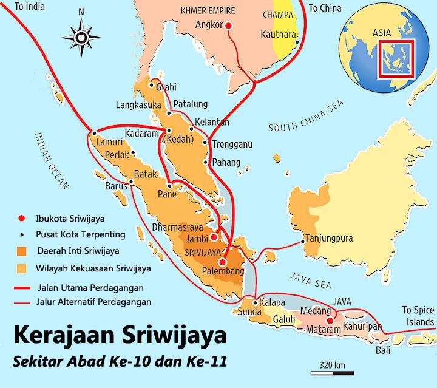
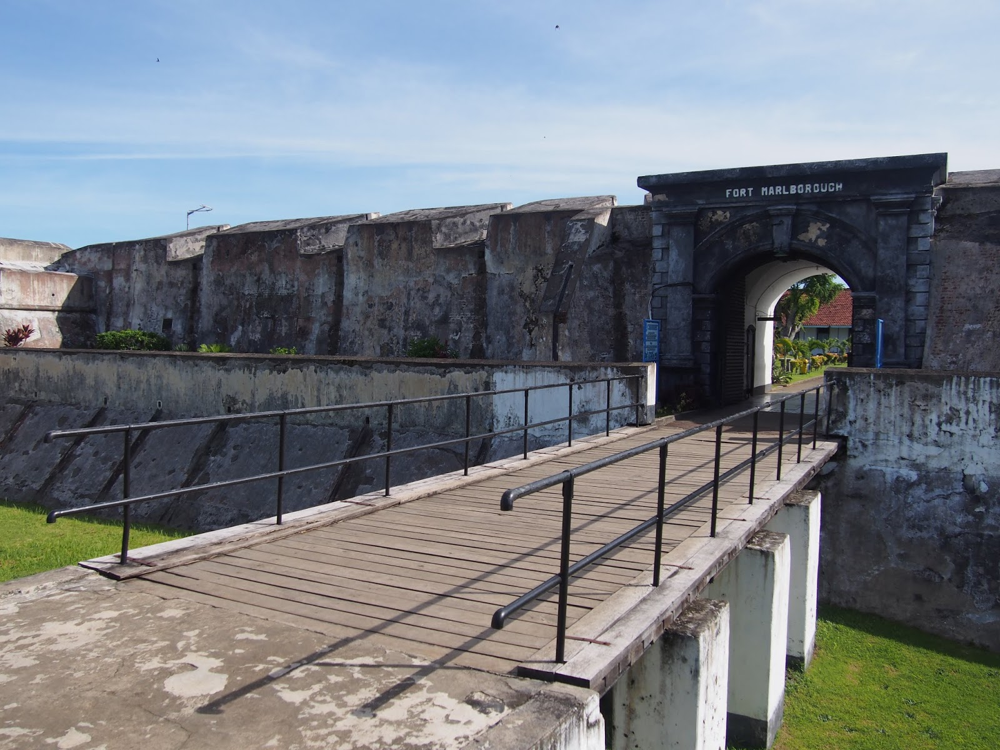
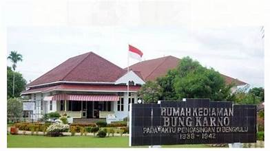
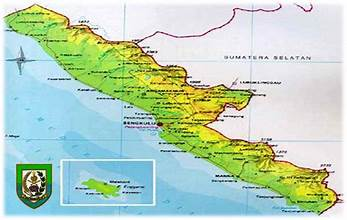

Sejarah Awal Bengkulu
Bengkulu telah dihuni sejak zaman prasejarah, dengan bukti berupa penemuan artefak megalitik di beberapa wilayah. Pada masa Kerajaan Sriwijaya, daerah ini menjadi salah satu pusat perdagangan di pantai barat Sumatra, terutama untuk hasil bumi seperti lada, emas, dan rempah-rempah.
Kerajaan kecil seperti Sungai Serut dan Selebar berkembang di wilayah ini, sebelum akhirnya pengaruh Kesultanan Aceh dan Minangkabau mulai terasa pada abad ke-15. Kesultanan Aceh memainkan peran penting dalam mengontrol perdagangan di kawasan ini.
Kolonialisme di Bengkulu
Pada abad ke-17, Inggris mendirikan benteng pertahanan di Bengkulu, yaitu Fort Marlborough, sebagai basis mereka untuk mengontrol perdagangan lada. Benteng ini menjadi salah satu peninggalan kolonial Inggris terbesar di Asia Tenggara.
Namun, pada tahun 1824, melalui Perjanjian London, Inggris menyerahkan Bengkulu kepada Belanda sebagai pertukaran atas Singapura. Di bawah pemerintahan Belanda, Bengkulu tetap menjadi wilayah strategis untuk perdagangan, meskipun sering terjadi perlawanan dari masyarakat setempat.
Peran Bengkulu dalam Perjuangan Kemerdekaan
Bengkulu memiliki peran penting dalam perjuangan kemerdekaan Indonesia. Pada tahun 1938-1942, Bung Karno diasingkan oleh Belanda ke Bengkulu. Selama masa pengasingan, Bung Karno banyak berinteraksi dengan masyarakat Bengkulu dan menyebarkan ide-ide kemerdekaan.
Di Bengkulu pula, Bung Karno bertemu dengan Fatmawati, yang kemudian menjadi istri beliau dan menjahit bendera Merah Putih pertama. Banyak tokoh masyarakat Bengkulu yang turut serta dalam perjuangan melawan penjajah, baik Belanda maupun Jepang.
Bengkulu sebagai Provinsi
Setelah Indonesia merdeka, Bengkulu awalnya merupakan bagian dari Provinsi Sumatra Selatan. Pada tahun 1968, Bengkulu secara resmi menjadi provinsi tersendiri berdasarkan Undang-Undang Nomor 9 Tahun 1967. Kota Bengkulu ditetapkan sebagai ibu kota provinsi.
Hingga kini, Bengkulu terus berkembang, dengan fokus pada pelestarian budaya, sejarah, dan pengembangan potensi ekonomi, terutama di bidang pertanian, perikanan, dan pariwisata.
untuk lebih jelas kunjungi website berikut jelajahi